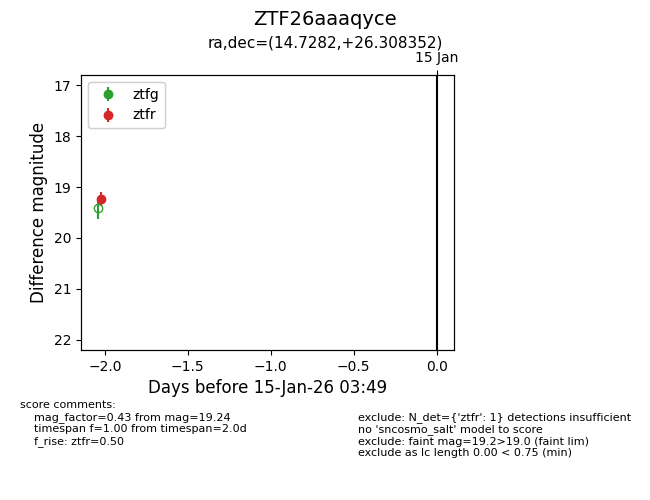
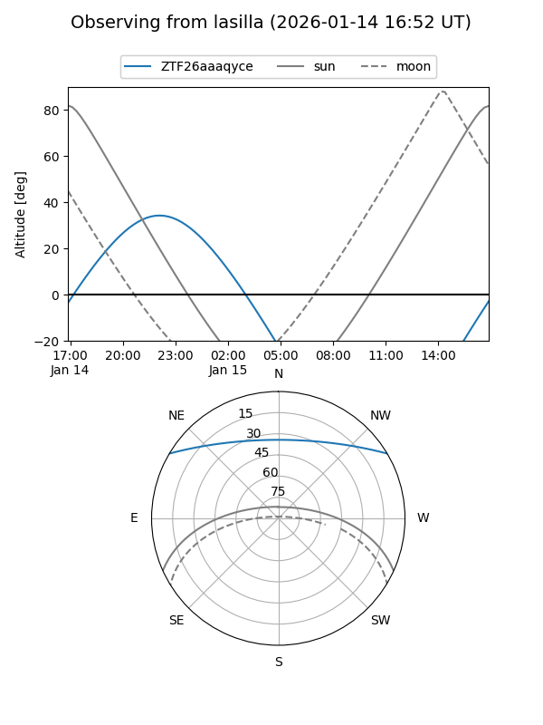
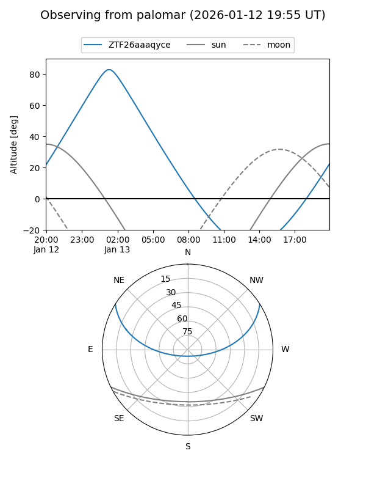

ZTF26aaaqyce
Target ZTF26aaaqyce at 2026-01-15 03:50
Aliases and brokers:
FINK: link
Lasair: link
ALeRCE: link
alt names
ZTF26aaaqyce (ztf,fink_ztf)
Coordinates:
equatorial (ra, dec) = 14.7282,+26.30835
equatorial (HMS+DMS) = 00:58:54.77,+26:18:30.07
galactic (l, b) = (125.0168,-36.53313)
Flags:
Photometry:
last ztfr=19.24
1 ztfr detections
Lightcurve

Visibility


Additional plots